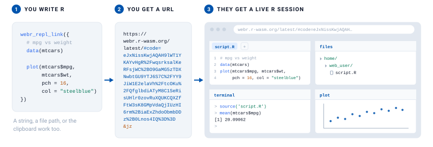

Create shareable links for R code in WebAssembly (WASM) environments: webR for a full R REPL, and Shinylive for R and Python Shiny apps.
There is no server and nothing to upload. Your code is compressed and encoded into the URL itself. Everything after the # is a URL fragment, which browsers never send anywhere, so the recipient clicks the link and lands in a running R session in their browser.

Full documentation is at https://r-pkg.thecoatlessprofessor.com/livelink/.
Installation
You can install livelink from CRAN with:
install.packages("livelink")Or install the development version from GitHub with:
# install.packages("remotes")
remotes::install_github("coatless-rpkg/livelink")Quick Start
The examples below create and decode links for R code, R Shiny apps, and Python Shiny apps.
webR links
Share R code that runs in the browser.
Pass the code straight in, with no quotes and no escaping, just braces:
library(livelink)
link <- webr_repl_link({
data(mtcars)
plot(mtcars$mpg, mtcars$wt)
})
print(link)
#>
#> ── webR Link ──
#>
#> <https://webr.r-wasm.org/latest/#code=eJyb2LwkLzE3dUVxclFmQYle0JKCxJKM7foZ%2Bbmp%2BuWpSfGlxalF%2BnDJktSKkpsaKYkliRq5JcmJRcWaXAU5%2BSVQjkpuQbqOApRdXqIJAPpaJJY%3D&mz>
#>
#> File: 'script.R' → '/home/web_user/script.R'
#> Version: "latest"
#> Autorun: FALSEStrings, file paths, and the clipboard work too, if the code is already somewhere else:
webr_repl_link("plot(1:10)") # a string
webr_repl_link("analysis.R") # a file on disk
webr_repl_link() # whatever is on your clipboardShinylive apps
Share a Shiny application the same way:
# Simple Shiny app
app_code <- '
library(shiny)
ui <- fluidPage(
titlePanel("Hello Shinylive!"),
sidebarLayout(
sidebarPanel(
sliderInput("n", "Number of points:", 10, 100, 50)
),
mainPanel(
plotOutput("plot")
)
)
)
server <- function(input, output) {
output$plot <- renderPlot({
plot(rnorm(input$n), main = paste("Random points:", input$n))
})
}
shinyApp(ui = ui, server = server)
'
# Create app link
app_link <- shinylive_r_link(app_code, mode = "app")
print(app_link)
#>
#> ── Shinylive R App ──
#>
#> <https://shinylive.io/r/app/#code=NobwRAdghgtgpmAXGKAHVA6ASmANGAYwHsIAXOMpMAHQgBsBLAIwCcoWBPACgGcALBhA4BKWrQCuDAAQAeALRSAZnUkATAApQA5nC60pU0g1J04miHDp6wACUt0iUgMoChjAG5wAhNTDDc+lI8DKpwTOwAMlAcROKkehAGBsGh4SzmlglJSTyMoSwAkhCocdYQvrhSvgBy4jBMcCxSRIpSqESCpDyIFVIAjAAMlYNDUgCsA6KJSf6BBjBQghlWc0moDqQA8nEl8b7rRKS+U9knUlNTtDyNnk3ySuIQBEYkXIK7lbGku8JSIIFfXYAEgOpFkChYFHy6g2XH+0wMoK4LAgRBYMDexTiQIg-ikC0EUgAvG0oDxyNYsFAIKoiDA2h0yN1eu9sbizgBfKYcsQQfiCDgAQXQXEkxKkkkq1xYt3F0tuUzwYFIHFQCGQ5AAHqQwByALpAA>
#>
#> Files (1):
#> 'app.R'
#>
#> Engine: "R"
#> Mode: "app"Multi-file Projects
A project can hold several files. Write each one as R, in braces, and mix in a string for anything that is not code.
library(livelink)
project <- webr_repl_project(list(
"analysis.R" = {
source("utils.R")
create_plot(mtcars)
},
"utils.R" = {
create_plot <- function(data) {
plot(data$mpg, data$wt, main = "MPG vs Weight")
}
},
"README.md" = "# Car Analysis\nAnalysis of the mtcars dataset."
), autorun_files = "analysis.R")
print(project)
#>
#> ── webR Project ──
#>
#> <https://webr.r-wasm.org/latest/#code=eJxdj01qAkEQRvdzimKSwAyYmQskC0kkKyEIIUspx9JpmO4euqv9QVzpDbyCIHoA0bWn8DaOraJYq6K%2Bot6rxXypUNIGFRZjK2zSWpbI%2BT7NtaR0SJ22s2TSh5hpxMc3q53JKAodi6KahnGQGUKmdllojiRnaGy8QsfaOHWYecjquuwJ2yfCLfPn%2Fx6Owcc79JzKWGgVdZExhkkAVXnSefAqy34NfDfkGkgUCj4hbP7%2BwMDCP4l%2BzpXg9GKxbjXq381GIrveY%2FfkcU%2B9SfICX2igfv0%2FuDWge8A5weVTD7fEyQlXE38U&mza>
#>
#> Files (3):
#> 'analysis.R' → '/home/web_user/analysis.R' (autorun)
#> 'utils.R' → '/home/web_user/utils.R'
#> 'README.md' → '/home/web_user/README.md'
#> Version: "latest"Write the list() inside the call. If you assign it to a variable first, R runs the braces before livelink ever sees them.
Educational content
Create paired exercise and solution links:
exercise <- "
# Exercise: Calculate summary statistics
# TODO: Calculate the mean and median of mtcars$mpg
mean_mpg <- # YOUR CODE HERE
median_mpg <- # YOUR CODE HERE
cat('Mean MPG:', mean_mpg, '\\n')
cat('Median MPG:', median_mpg, '\\n')
"
solution <- "
# Solution: Calculate summary statistics
mean_mpg <- mean(mtcars$mpg)
median_mpg <- median(mtcars$mpg)
cat('Mean MPG:', mean_mpg, '\\n')
cat('Median MPG:', median_mpg, '\\n')
"
exercise_links <- webr_repl_exercise(exercise, solution, "mpg_stats")
# Share exercise with students
student_link <- repl_urls(exercise_links$exercise)
# Keep solution for instructor
solution_link <- repl_urls(exercise_links$solution)Batch processing
Turn a whole directory into links in one call:
# Process all R files in a directory
links <- webr_repl_directory("./examples/",
autorun = TRUE,
panels = c("editor", "plot"))
# Process Shiny app directories
shiny_links <- shinylive_directory("./shiny_apps/",
engine = "r",
mode = "app")Link preview and decoding
Inspect a webR link in memory, without writing any files:
# Preview a link without downloading
existing_url <- "https://webr.r-wasm.org/latest/#code=eJyb2LwkLzE3dUVxclFmQYle0JKCxJKM7foZ%2Bbmp%2BuWpSfGlxalF%2BnDJlMSSxCNcBTn5JRqGVoYGmgBEFxiu"
preview <- preview_webr_link(existing_url)
print(preview)
#>
#> ── webR Link Preview ──
#>
#> URL:
#> <https://webr.r-wasm.org/latest/#code=eJyb2LwkLzE3dUVxclFmQYle0JKCxJKM7foZ%2Bbmp%2BuWpSfGlxalF%2BnDJlMSSxCNcBTn5JRqGVoYGmgBEFxiu>
#>
#> Files: 1
#> Total size: 10 bytes
#> Version: "latest"
#> Encoding: "mz"
#>
#> 'script.R' (10 bytes)
#>
#> Use print(preview, show_content = TRUE) to see file contentsOnce you trust a link, decode it to write the files to disk:
# Extract files to local directory
result <- decode_webr_link(existing_url, output_dir = "./extracted")
print(result)
# Batch decode multiple URLs
urls <- c(url1, url2, url3)
results <- decode_webr_link(urls, output_dir = "./all_extracted")Python Shiny support
Python Shiny apps work exactly like the R ones:
py_app <- '
from shiny import App, render, ui
app_ui = ui.page_fluid(
ui.h2("Hello from Python Shiny!"),
ui.input_slider("n", "N", 0, 100, 20),
ui.output_text_verbatim("result"),
)
def server(input, output, session):
@output
@render.text
def result():
return f"n*2 is {input.n() * 2}"
app = App(app_ui, server)
'
py_link <- shinylive_py_link(py_app, mode = "app")
print(py_link)
#>
#> ── Shinylive Python App ──
#>
#> <https://shinylive.io/py/app/#code=NobwRAdghgtgpmAXGKAHVA6VBPMAaMAYwHsIAXOcpMAHQgDMAnYmAAgGcALASwm1e4xUxRmVYBBdHlaNKAEziNpAV2506aVAH1VrALytVWKAHM4W+gBtVcgBR1Wjw9wycATPbAAJOJcvFWJhZWAAVsMk5SVgBlHj4AQhowAEo8BycjXlRlMi12S24FRk8IJOkkgDky1gAGaQBGGrrWNxrU9McjYhzs3IoAD1yAN0UAIygyQU9ZdmVLMiT2iGT1CAV6DkUR4qyc6W6yXul2OHZ2blJkxA7WAAED3pvb2TXFDAGFiCdWdZlTubItiuN2+sjIykYX3oSQgACo3AJ2KwQLsyBgIEDWLCWgBfJKrTT6CToWyaHTcY5bRQrCD4MBkbCoBDID5gHEAXSAA>
#>
#> Files (1):
#> 'app.py'
#>
#> Engine: "Python"
#> Mode: "app"Acknowledgements
Thanks to George Stagg for webR and its browser REPL, and to Winston Chang for the Shinylive share-URL feature. livelink writes to the share formats they built and opens in the runtimes they maintain, so it is mostly a friendly wrapper around a good idea they had. Pyodide is its own remarkable project, and it is what runs the Python side of Shinylive. Thanks, too, to peeky for stating the other half of this idea plainly enough that the feature became obvious. And for turning a braced R expression into clean, verbatim source, livelink borrows reprex’s stringify_expression(), copyright the reprex authors and MIT licensed. livelink is one step, and webrarian is the next, already taking shape.